How to design your map
Everything the designer does, step by step, with the mistakes that are easy to make and what it can and can't do. Allow ten minutes for your first map.
1. The screen at a glance
The map is on the left and the steps are on the right. The orange frame in the middle of the map stays still: you move the map underneath it, and whatever sits inside the frame becomes your design. The labels on the frame show the board size and the real distance it covers, with the map scale.
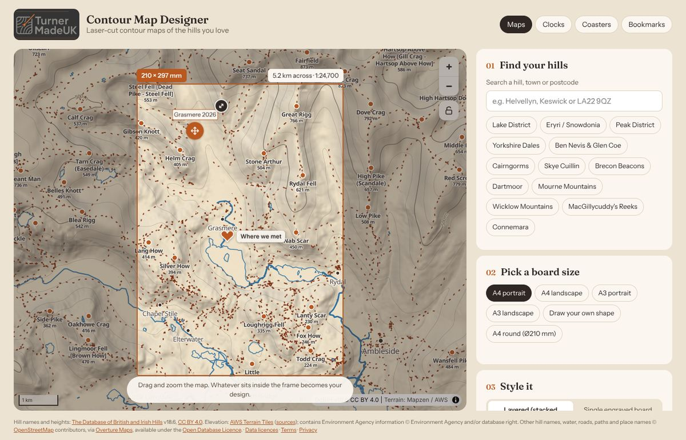
- Moving the map
- Drag to move, and scroll or pinch to zoom. The + and − buttons zoom too.
- The padlock
- Locks the map so you can't move it by accident while you tick options or drag markers. Tap it again to unlock. Search and the area buttons still work while it's locked.
- What you see on the map
- Contour lines at your chosen spacing, hill names, place names, and the water, roads and paths you tick in step 3, so you can see what will end up on the board before you make it.
2. Find your hills
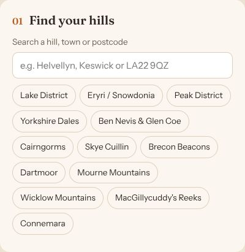
- Search box
- Type a hill (e.g. Helvellyn), a town or village (e.g. Keswick) or a UK postcode, full (LA22 9QZ) or just the first half (LA22), then press Enter. The map flies there. Hill names suggest themselves as you type.
- Area buttons
- Jump straight to a popular area, such as the Lake District or Eryri / Snowdonia.
Then drag and zoom until the hills you want sit inside the frame.
3. Pick a board size
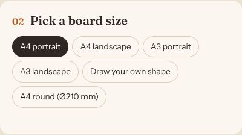
The frame on the map changes to the size and shape you pick.
- A4 / A3, portrait or landscape
- Rectangular boards: A4 is 210 × 297 mm, A3 is 297 × 420 mm.
- A4 round
- A circle 210 mm across.
- Draw your own shape
- Outline exactly the area you want, such as a valley, an island or a whole fell round.
Drawing your own shape
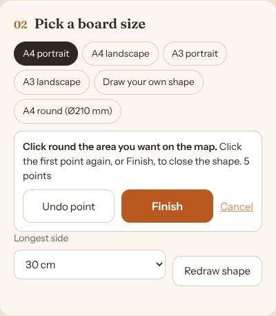
Click (or tap) round the area on the map, one corner at a time. Click the first point again, or Finish, to close the shape. Undo point takes back the last click. Then choose how long the shape's longest side should be. Use Redraw shape to start again.
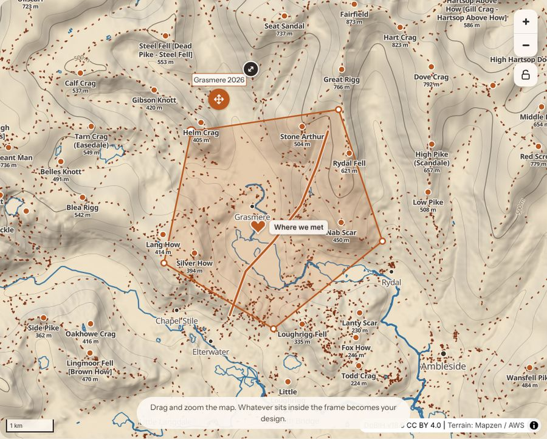
On the clocks, coasters and bookmarks pages the frame takes the shape of the product, with the clock face, coaster border or bookmark hole shown on the map.
4. Style it
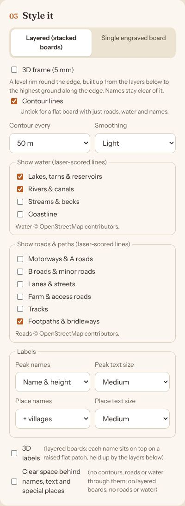
- Layered or single engraved board
- Layered: the map is cut into stacked boards, one per contour, so the hills stand up in 3D. Single engraved board: one flat board with the contours burnt on as lines. Clocks, coasters and bookmarks are always single engraved boards.
- Frame (5 mm)
- A rim round the edge. On engraved boards it's a separate piece glued on top. On layered boards it's a 3D frame, built up level with the highest ground along the edge. Names keep clear of it.
- Contour lines
- Untick for a flat board with just water, roads and names on it.
- Contour every
- The height between contours, and so between layers. Smaller spacing means more layers, more detail and a taller, pricier piece. See pitfalls for how to pick it.
- Smoothing
- Rounds off the contours. Light suits most maps; None keeps every crag but can leave tiny, fragile slivers.
- Water
- Lakes, tarns and reservoirs, and wide rivers and canals, are filled in solid by the laser. Streams and the coastline are thin lines.
- Roads & paths
- From motorways down to farm and access roads. Tracks and footpaths come out as rows of dots, so you can tell them from the contours.
- Labels
- Peak names (with or without heights) and place names (cities, towns, villages), each with a text size.
- 3D labels
- Layered boards only: each name sits on its own small raised patch, so it's always on top and never split across layers.
- Clear space behind names
- Keeps contour lines away from names, text and special places so they're easier to read. Water, roads, paths and your route always stop short of names anyway.
5. Mark a special place (optional)
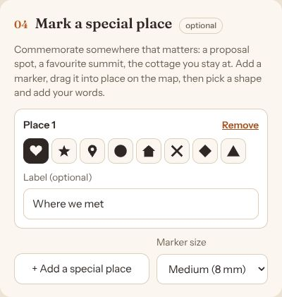
Mark somewhere that matters: where you got engaged, a favourite summit, the cottage you stay in.
- + Add a special place
- Puts a marker in the middle of the frame. Drag it on the map to the exact spot. You can add up to three.
- Shape
- Heart, star, pin, circle, house, cross, diamond or triangle.
- Label
- Optional words beside the marker, in bold.
- Marker size
- How big the markers are on the board.
6. Add your own text (optional)
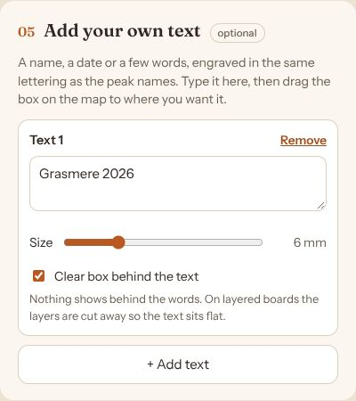
A name, a date or a few words, in the same lettering as the peak names. Up to three text boxes, each up to four lines.
- Move it
- Drag the box on the map, or use the round orange grip under it (easiest on a phone).
- Resize it
- Drag the small dark handle at its top right corner, or use the size slider.
- Clear box
- On by default: a clean panel behind your words with nothing showing through.
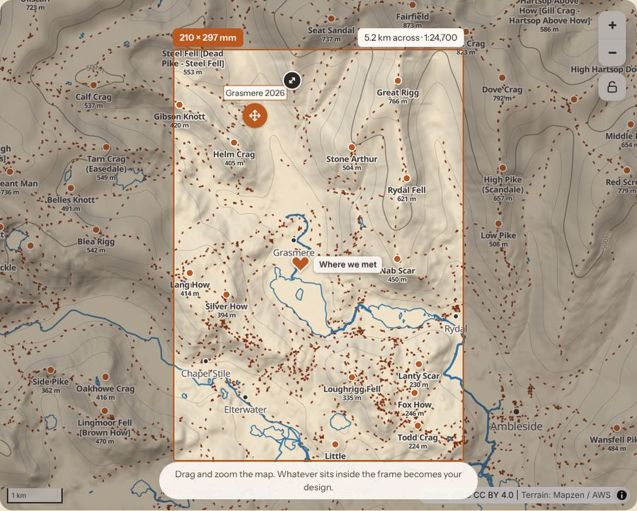
7. Add a hiking route (optional)
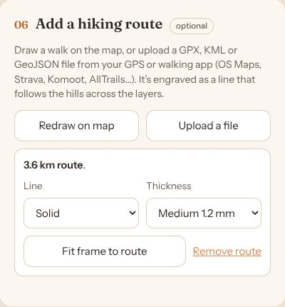
- Draw on map
- Click or tap along your walk, then Finish route. Undo point takes back a click.
- Upload a file
- A GPX, KML or GeoJSON file from your GPS or walking app (OS Maps, Strava, Komoot, AllTrails…).
- Line and thickness
- Solid or dashed; fine, medium or bold.
- Fit frame to route
- Moves and zooms the map so the whole route sits in the frame.
The route is engraved as a line that follows the hills across the layers, and stops short of names.
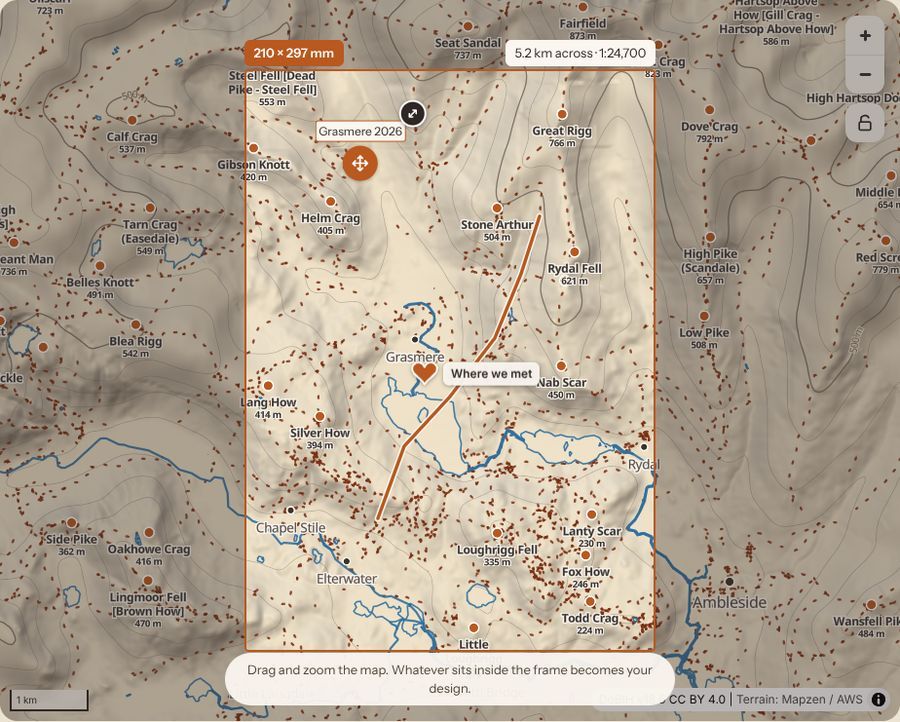
8. Preview and send
Press Create my layout. After a few seconds (longer for big, detailed maps) your layout opens.
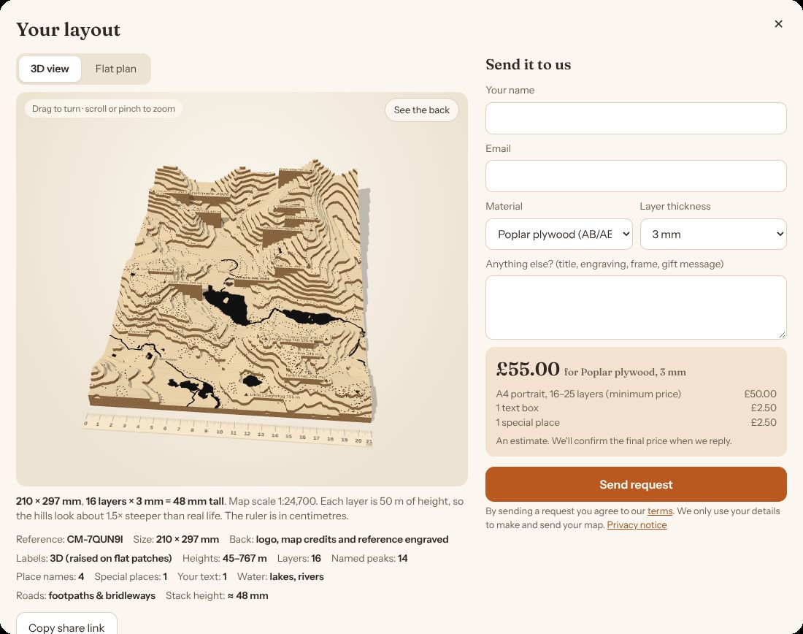
- 3D view
- Your piece as it will look: drag to turn it, scroll or pinch to zoom. The ruler is in centimetres.
- See the back
- Turns the piece over. Every piece has our logo, the map credits, the map's centre and contour spacing, and your reference engraved on the back.
- Flat plan
- The design seen from above, exactly as it will be cut and engraved.
- Details
- Size, number of layers and stack height, heights covered, and how many names fitted. Names left off tells you if anything didn't fit (see pitfalls).
- Copy share link
- A link that reopens this exact design, to save it for later or show someone.
- Material and layer thickness
- Choose the wood. The price updates as you change it. Coasters and bookmarks are always made in 2 mm ceiba plywood, so there is no choice to make for those.
- Send request
- Sends your design to us with your name, email and any notes. We reply to confirm the details and price before anything is made.
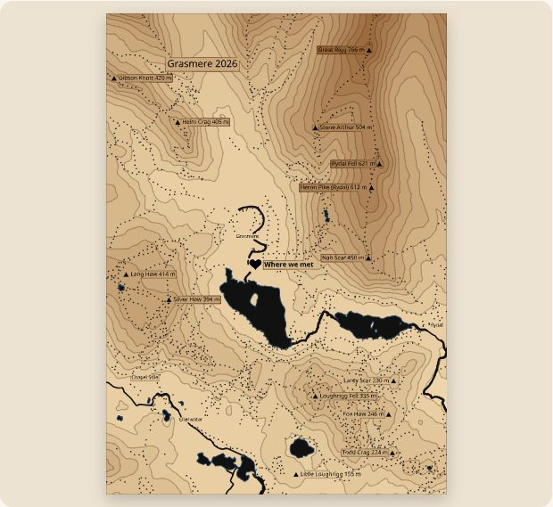
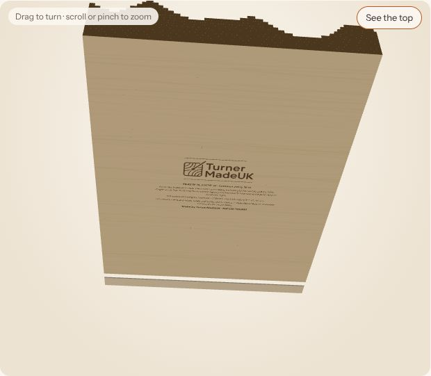
Came from our Etsy shop? You'll see Save my design instead of Send request. It gives you a short code to paste into the personalisation box when you buy on Etsy.
9. On a phone
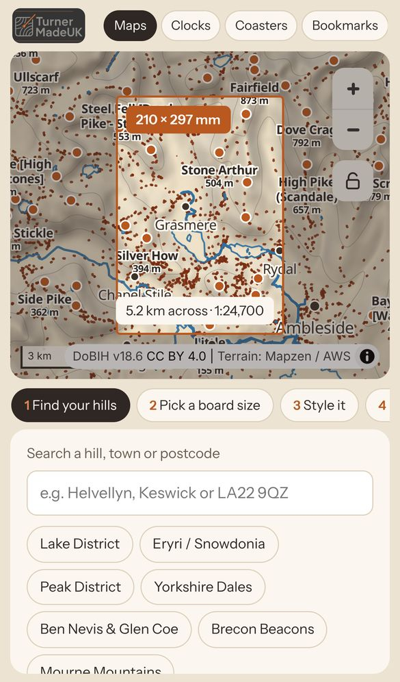
The map stays at the top of the screen the whole time, so you can see what each option does.
- Swipe the panel under the map left or right to move between steps, or tap a step's tab.
- Each step scrolls up and down on its own.
- Use the padlock to stop the map moving while you drag markers or text with your finger.
10. Common pitfalls
Too many (or too few) layers
The number of layers is the height range in the frame divided by the contour spacing. A big mountain area at 10 m spacing can mean a hundred layers: a tall, heavy, expensive piece full of thin, fragile bits. A gentle area at 100 m spacing might be two layers and look flat.
Aim for roughly 10–25 layers. Check "Layers" in the layout details, and change "Contour every" until it's in that range. The note under the 3D view also tells you how much steeper than real life the hills will look.
Names left off
Names never overlap each other: if one has no room, it's left off and counted under Names left off. Large text, place names down to villages, and a big area all crowd the board.
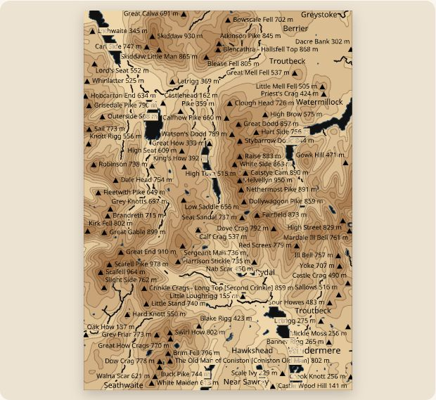
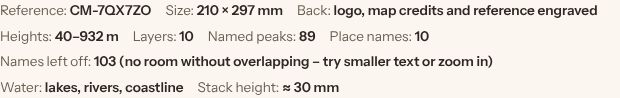
Use smaller text, show names without heights, show fewer place names, or zoom in on a smaller area.
A peak you wanted isn't named
Higher summits get first choice of space, so a lower top next to a big one can lose out. Its triangle is left off too, so there are no unnamed markers.
Add it as a special place with its name as the label, as special places are placed before peaks. Or use smaller text.
The map moved after you set it up
It's easy to nudge the map while dragging a marker or scrolling the page, especially on a phone.
Get the frame right first, then tap the padlock.
Your route or marker isn't on the layout
Anything outside the frame (or under the frame's rim, or off a shaped board's map area) is left off. The layout window tells you if your route was left off.
Use Fit frame to route, and drag markers and text well inside the frame.
Fragile slivers and tiny islands
Very close contour spacing with no smoothing can leave pieces only a few millimetres across. Very small bits are removed automatically, but thin necks can still be delicate.
Use Light or Medium smoothing, and a slightly wider contour spacing.
A huge area loses its rivers and roads
Over about 200 km across (most of a country), rivers, lakes and roads are left off because they'd be far too fine to see, and the coastline is simplified. The layout tells you when this happens.
Zoom in if you want water and roads on the board.
Changing the size after placing things
Switching board size changes the frame's shape, so markers and text near the edge can end up outside it.
Pick the board size before adding special places, text and routes, or check them again after.
11. What the designer can't do
- Where: hill names, water, roads, places and postcodes cover Great Britain and Ireland only. Irish Eircodes can't be searched yet; search a town or hill instead.
- Height detail: the height data is accurate to tens of metres across, not to every crag. Small features are smoothed out, and heights can differ by a few metres from OS maps. Very occasionally the data has small glitches; we check every design before cutting.
- Map data: rivers, roads, paths and many hill names come from OpenStreetMap, which volunteers keep up to date. A path or lane may be missing or out of date there, so it won't appear here either.
- Small water: ponds smaller than about 1,500 m² are left off; they'd only be a dot.
- Layers: at most 150 layers (the designer asks you to widen the spacing beyond that), and the smallest pieces (about 2 × 2 mm) are dropped because they can't be cut safely.
- Text: up to three text boxes, four lines and 120 characters each, in one typeface. Up to three special places.
- Products: clocks, coasters and bookmarks are single engraved boards only, not layered. Coasters come singly or in sets of up to four, all the same design.
- Look: the preview shows the design, not the exact wood. Grain, colour and how dark the laser burns vary from sheet to sheet.
- Price: the price shown is an estimate. We confirm the final price when we reply.
Back to top · Terms · Privacy · Data licences